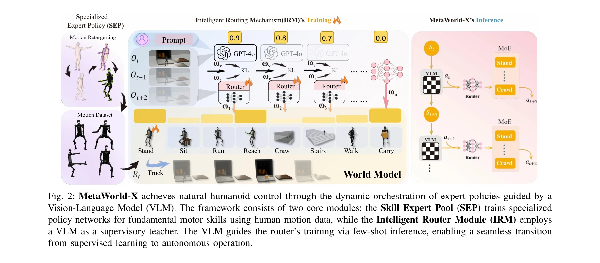

저자: Yutong Shen, Hangxu Liu, Penghui Liu, Jiashuo Luo, Yongkang Zhang, Rex Morvley, Chen Jiang, Jianwei Zhang, Lei Zhang | 날짜: 2026-03-09 | URL: https://arxiv.org/abs/2603.08572

Fig. 2: MetaWorld-X achieves natural humanoid control through the dynamic orchestration of expert policies guided by a
휴머노이드 로봇의 복잡한 로코-매니퓰레이션 제어를 Specialized Expert Policy(SEP)와 VLM 기반 Intelligent Routing Mechanism(IRM)으로 분해-통합하는 계층적 프레임워크를 제안한다. 인간 모션 프라이어와 의미적 라우팅을 결합하여 자연스럽고 안정적인 동작을 생성한다.
Fig. 2: MetaWorld-X achieves natural humanoid control through the dynamic orchestration of expert policies guided by a
Fig. 2: MetaWorld-X achieves natural humanoid control through the dynamic orchestration of expert policies guided by a
총평: MetaWorld-X는 human motion priors, world models, VLM 기반 의미적 라우팅을 창의적으로 결합하여 고자유도 휴머노이드 로코-매니퓰레이션 제어의 중요한 문제(스킬 간섭, 부자연스러운 동작, 낮은 일반화)를 효과적으로 해결한다. Humanoid-bench에서의 강력한 실험 결과와 명확한 방법론 제시에도 불구하고, 실제 로봇 검증 부재가 임팩트를 제한한다.